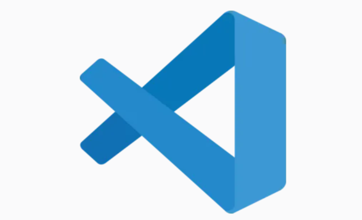

¡Bienvenido al mejor camino para aprender a programar!
Ofrecemos cursos gratuitos y recursos para que empieces a programar con VS Code. Desde los conceptos más básicos hasta las habilidades más avanzadas, nuestro objetivo es guiarte en cada paso del camino.
Explorar Cursos Ver Proyectos¿Por qué VS Code?
Visual Studio Code es el editor de código más popular del mundo, y por una buena razón. Es ligero, potente, y tiene un ecosistema de extensiones que te permite trabajar con casi cualquier lenguaje de programación.
Recomendaciones para empezar
Si eres un completo principiante, te recomendamos que sigas estos pasos:
- Comienza con el curso de **Fundamentos de VS Code** para dominar la herramienta.
- Luego, elige un lenguaje como **Python** o **HTML/CSS** para tu primer proyecto.
- ¡Practica mucho! La programación se aprende haciendo.
Lo que nuestros estudiantes dicen
"Comencé sin saber nada de código y ahora puedo crear mis propias páginas web. ¡Es increíble!" - Ana S.
"Los cursos son muy claros y van directo al punto. ¡Perfecto para principiantes como yo!" - Luis P.
Preguntas frecuentes
¿Necesito experiencia previa en programación?
No, nuestros cursos están diseñados para principiantes absolutos. Solo necesitas una computadora y ganas de aprender.
¿Los cursos son realmente gratuitos?
Sí, todos nuestros cursos son completamente gratuitos. No hay costos ocultos ni suscripciones.
¿Qué lenguaje de programación debo elegir primero?
Si te interesa el desarrollo web, empieza con HTML y CSS. Si prefieres la lógica, Python es una excelente opción por su sencillez.